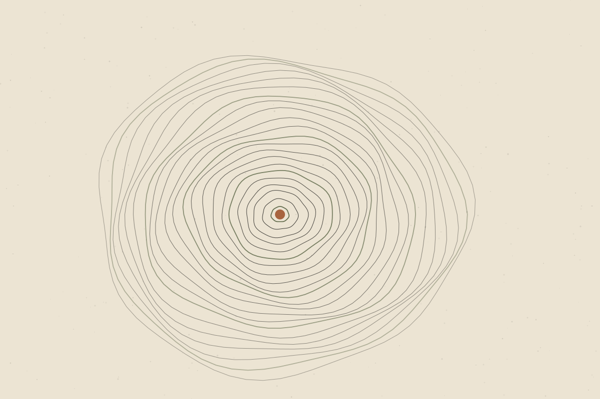

What Does the Evidence Actually Say About Recovery?
Sleep, load, food and the popular recovery tools — sorting the foundations from the fashionable.

“Recovery” now has its own product category: ice baths, compression boots, massage guns, supplements and tracking devices. Behind the marketing is a useful idea. Training and daily life place demands on the body, and adaptation happens when there is enough time and resource to respond to them.
What recovery actually means
Recovery can refer to several different things: feeling less tired or sore, restoring performance for the next session, and the longer-term adaptations that make you fitter or stronger. A tool can help one of these without helping — or while even affecting — another.
Sleep: the foundation
Well supportedAdequate sleep is consistently associated with better physical and cognitive performance, mood and overall health. Sleep restriction tends to impair performance and how effort feels.
Before investing in recovery products, improving sleep regularity and duration is usually the most valuable step.
Managing training load
Well supportedProgressive increases in training, with enough rest between demanding sessions, are fundamental principles of exercise programming.
Emerging / mixedSpecific formulas for how quickly to increase training load to prevent injury have been widely used, but their predictive value has been debated in recent research.
Nutrition
Well supportedEating enough overall energy, and adequate protein spread across the day, supports recovery and adaptation to training. Very low energy intake over time can impair recovery and health.
Popular recovery tools
Massage
Emerging / mixedMassage may reduce perceived soreness and fatigue for some people. Its effects on actual performance recovery appear small or inconsistent.
Cold water immersion
Emerging / mixedCold water immersion may reduce feelings of soreness after hard exercise. Some research suggests regular use straight after strength training might blunt muscle-building adaptations, so timing may matter depending on your goals.
Compression garments and devices
UncertainEvidence for meaningful recovery benefits is limited and mixed. Some people find them comfortable, which may be a reasonable reason to use them.
Recovery supplements
UncertainMany supplements are marketed for recovery, but evidence is variable, products differ in quality, and some may interact with medications. Speak to a qualified professional before using them.
The role of feeling recovered
How recovered you feel matters. If a tool helps someone feel ready to train and it is safe and affordable, that perceived benefit is not meaningless. The key is to keep expectations realistic and not let tools replace the foundations.
When soreness is not just soreness
Seek medical advice for severe muscle pain, swelling, dark-coloured urine after exercise, or pain that does not improve. These can indicate problems that need assessment.
The bottom line
The best-supported recovery strategies are the least glamorous: enough sleep, sensible progression and adequate nutrition. Popular tools may add modest benefits for comfort, but the evidence rarely matches the claims made for them.
References & further reading
References below are placeholders. Each must be replaced with a verified source before publication.
- [Reference placeholder] — add a verified source on: sleep and athletic/cognitive performance. Include authors, year, title, journal and DOI or link.
- [Reference placeholder] — add a verified source on: training load and injury risk debate. Include authors, year, title, journal and DOI or link.
- [Reference placeholder] — add a verified source on: protein intake and recovery (position stand). Include authors, year, title, journal and DOI or link.
- [Reference placeholder] — add a verified source on: massage and recovery (meta-analysis). Include authors, year, title, journal and DOI or link.
- [Reference placeholder] — add a verified source on: cold water immersion and strength training adaptations. Include authors, year, title, journal and DOI or link.